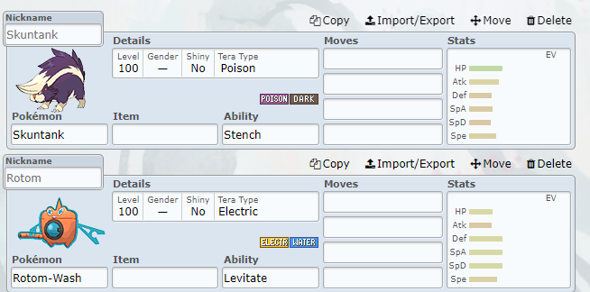
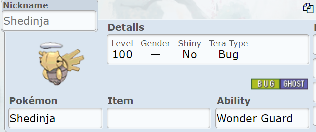
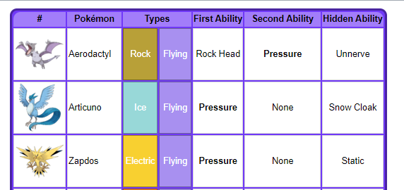
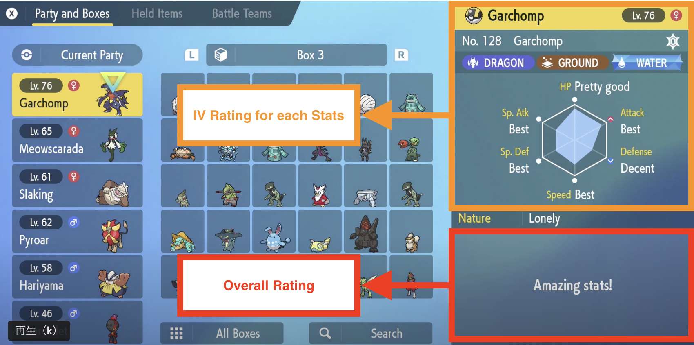
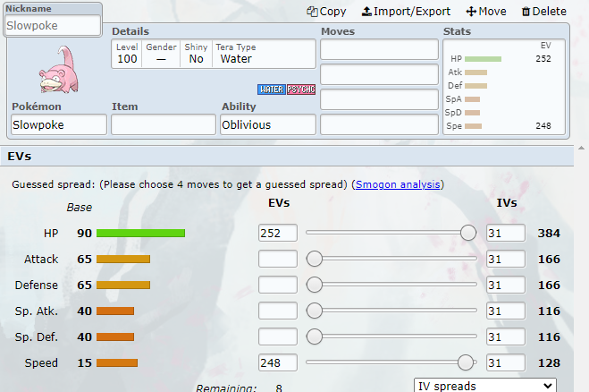
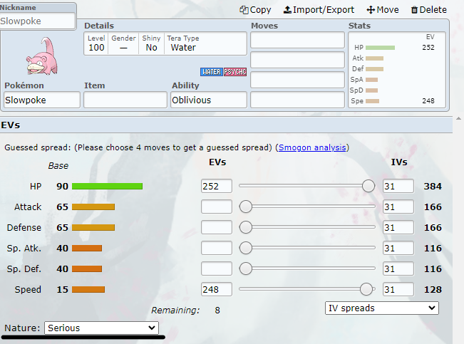

| Introduction | Common Information | Tiers in Competitive Pokémon |
Common Strategies | Reference |
|---|
To get good at Competitive Pokémon, it is important to understand the basics. To begin, it is good to get familiar with the type matchups. Here is a chart of the effects each typing has on each other, also known as the type match-up chart.
Each row represents how much a type will do against another. Each column represents if a type is weak or resistant to another. The numbers (1x, 1/2x, 2x) represent the damage multiplied depending on if a type is strong, weak, or neutral against another type. Understanding the type matchups can help you pick out a team, severely increasing the damage your team is dealing to the opponents as well as maintaining a good defense.
|  |
Skuntank is a poison and dark type. Looking at the type match-up chart, the weaknesses and resistances of dark and poison make it so it doesn't have any weaknesses except ground. This way, we can put a water type such as Rotom-Wash on our team to take care of any ground types as ground is weak to water (and Rotom-Wash has levitate, making it immune to ground moves). |
|---|
Abilites are just as vital as movesets. If you didn't know already, abilities are passive effects each Pokémon has. They each have specific Pokémon that can get the ability. Most abilities can be obtained by multiple Pokémon, but some Pokémon have a signature ability. For example...
|
Here we can see Shedinja has the ability "Wonder Guard". This ability is signature to Shedinja, meaning no other Pokémon can get this ability. If you don't know what an ability does you can click here to go to serebii's AbilityDex and search up what the ability does. In this example, Wonder Guard allows Shedinja to ignore all damaging moves unless they're super-effective. Looking on the type chart, we can see the only moves that effect Shedinja are moves that are Dark, Flying, Rock, Fire, or Ghost. |
 |
|---|---|
|  |
However, there are still abilities that aren't signature. For example, a total of 35 Pokémon have pessure. |
Though intimidating, Base Stats, EVs, IVs and nature are important subjects in competitive Pokémon. This information will come in handy in team building and deciding roles each of your team members play.
The most simple is base stats. Each Pokémon has 6 main stats. These stats are Hit Points or Health (HP), Attack (Atk), Defense (Def),
Special Attack (SpA), Special Defense (SpD), and Speed (Spe). Each species of Pokémon has their own unique value of each category, for example Pikachu has a base speed stat
of 90.
For reference, this is a table of what each stat does as well as the Pokémon with the highest and lowest stat of that category. However, it is important to note that
different games (called generations) may have different casts of Pokémon, and the rankings may change. If you want to include any of these Pokémon, check to see if the
generation you’re playing in supports it.
| Stat | Effect | Pokémon with highest stat |
Pokémon with lowest stat |
|---|---|---|---|
| Attack (Atk) | Determines the damage the physical moves inflict. | Mega-Mewtwo X with the base attack stat of 190. This is insanely high as most strong physical Pokémon have a base attack of 130-150. But hey, what do you expect from a mega legendary? | Chansey with a base attack of 5. This is to make up for its outrageous hp stat of 255. |
| Defense (Def) | Determines the resistance of physical moves. | Shuckle with a base defense of 230. Who knew a small bug/rock type would rank top in base stats. Unfortunately, shuckle doesn’t have much else going for it besides its insane defense stats. | Chansey with a base defense of 5. It’s impossible to hurt with a special attack but it gets crippled with one physical attack. |
| Special Attack (SpA) | Determines the damage special moves inflict. | Mega-Mewtwo Y with a base special attack of 194. Mega-Mewtwo, X and Y, both rank top for their signature stats. | Bonsly with the base special attack stat of 10. It's a crying small rock trying to imitate a bonsai tree. What do you really expect? |
| Special Defense (SpD) | Determines the resistance of special moves. | Shuckle with a base special defense of 230. Shuckle, again, is shocking to be this defensively strong. It makes for a great staller in most teams. | Magikarp with the base defense stat of 20. The Pokémon company literally made a song on why this Pokémon is useless. |
| Health (HP) | Determines the total hit point a Pokémon can get. | Blissey and Chansey with a base health of 255. This makes up for its horrendous attack and defense stats of 10, but still makes it a monster to deal with. | Shedinja with a base hp of 1. That’s right. It has 1 hit point, but it also has a gimmick ability Wonder Guard which makes it immune to all damaging moves unless it’s super-effective. Neat! |
| Speed (Spe)) | Determines the order in which the turns play out. | Regieleki with a base speed of 200. This newly introduced legendary is insanely fast, almost outspeeding any Pokémon without stat changes. | Munchlax with the base speed of 5. This gluttonous Pokémon is slower than pretty much every competitor without stat changes. |
| Base Stat Total | The sum of the base stats of the Pokémon, including every category. | The highest base stat total comes to a tie between 3 mega legendaries, Mega-Mewtwo X, Mega-Mewtwo Y, and Mega-Rayquaza with a total of 780. | Wishiwashi with the base stat total of 15. After 5 years, it finally replaced sunkern! |
| When you get into competitive Pokémon, you’ll uncover many hidden numbers behind the game. A great example of this would be IVs. IVs stand for Individual Values. When you catch a Pokémon, they get a random set of permanent values for each of the 6 stats. They are a meticulous subject and usually count on luck to get good IVs. However, if you're using Pokémon Showdown you wouldn't need to worry about IVs as they're always set to max. |
 |
|---|
|
Much like IVS, EVs are also hidden numbers. However, unlike IVs, they can be changed. They stand for Effort Values, and they can be complicated to earn.
|
 |
|---|
|
Nature is a trait each individual Pokémon has, unlike base stats where it's the same based on species. There are 25 different nautres that affect specific stats. Every nature increases and decreases a specific stat, some increase and decrease the same stat making no change in the stats. For example, the Bold Nature increases Defense and decreases Attack. Choosing the right nature for you team can give it enough of a stat boost to win games. |
A list of all the natures and what they do
|
|---|---|
|  |